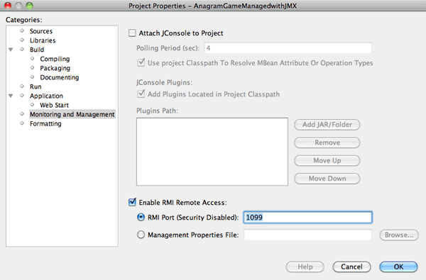

Apache NetBeans
Apache NetBeansLatest release
开发 Java 管理扩展 (JMX) 管理器并连接到远程 JMX 代理
| This tutorial needs a review. You can edit it in GitHub following these contribution guidelines. |
预计时间：30 分钟
NetBeans JMX 向导模块将 JMX 技术集成到 NetBeans IDE 中的工作流。此模块允许您快速开发管理应用程序，向现有应用程序添加管理，开发管理器应用程序，以及监视虚拟机的状态。
本教程将向您演示如何执行以下操作：
-
启动 JMX 代理以使其可从远程 JMX 管理器进行访问。
-
创建 JMX 管理器。
-
运行该管理器。
-
更新该管理器以添加您自己的管理逻辑。
教程练习

Figure 1. 此页上的内容适用于 NetBeans IDE 7.2、7.3、7.4 和 8.0
先决条件
本教程假定您具备以下技术的一些基本知识或编程经验。
-
JMX 技术：JMX 联机文档
-
Java 技术：Java SE 技术概览
-
NetBeans IDE
您还将受益于在 Java 平台的监视和管理方面的一些知识
本教程所需要的软件
在学习本教程之前，您需要在计算机上安装以下软件：
| 软件或资源 | 要求的版本 |
|---|---|
7.2、7.3、7.4、8.0、Java 版本 |
|
版本 7 或 8 |
|
JMX 插件 |
可从 NetBeans 更新中心获得 |
JConsole 插件 |
可从 NetBeans 更新中心获得 |
要安装 JMX 和 JConsole 插件，请选择“工具”>“插件”，然后从 NetBeans 更新中心下载模块。
资源
创建管理样例 Anagram 项目
本练习的目标是创建一个管理器应用程序可连接到的 JMX 代理。JMX 插件包括 JMX 代理样例 Java 项目。在此练习中，您将创建此样例项目，而不是从头开始编写 JMX 代理。
-
选择 "File"（文件）> "New Project"（新建项目）。
-
在 "Samples"（样例）中，选择 "JMX" 类别。
-
选择 "Anagram Game Managed with JMX"（使用 JMX 管理的 Anagram Game）项目。

Figure 2. "New Project"（新建项目）向导中的 "Anagram Game Managed with JMX"（使用 JMX 管理的 Anagram Game）
-
单击 "Next"（下一步）。无需更改已有的默认项目名称和位置值。确认选中 "Set as Main Project"（设置为主项目），然后单击 "Finish"（完成）。
运行代理
本练习的目标是启动一个启用了 JMX 远程管理的 Java 应用程序。远程管理允许客户端应用程序（JMX 管理器）连接到应用程序（JMX 代理）并可视化管理和监视信息。
*注：*基于 JDK 1.5、JDK 1.6 或 JDK 1.7 运行的任何应用程序均是您可为其启用远程管理的 JMX 代理。
-
确认 JMXAnagramGame 项目处于选中状态且设置为主项目。
-
右键单击 "JMXAnagramGame" 项目，然后选择 "Properties"（属性）。
-
在项目的 "Properties"（属性）对话框中选择 Monitoring and Management（监视和管理）类别。
-
取消选择 Attach JConsole to Project（将 JConsole 附加到项目）。
-
选择 Enable RMI Remote Access（启用 RMI 远程访问）。单击 "OK"（确定）。

Figure 3. 项目 "Properties"（属性）对话框中的 "Monitoring and Management"（监视和管理）类别
可以提供代理用于等待传入的 JMX 请求的端口。在本教程中，我们只保留默认端口 (1099)。如果您提供了其他端口号，则必须在本教程的每一部分进行适当的更改。另外，在本教程中，我们不指定属性文件。（针对您自己的应用程序，我们将提供一个向导来帮助您创建管理属性文件。）
-
从主菜单中选择 "Debug"（调试）> "Run Main Project with Monitoring and Management"（通过监视和管理运行主项目）以启动 Anagram Game 应用程序。
或者，单击工具栏中的 "Run Main Project with Monitoring and Management"（通过监视和管理运行主项目）按钮 ( )。
)。
当您运行该应用程序时，"Anagram Game" 窗口将打开。JVM 在本地主机端口 1099 上监听 RMI 访问。JMX 代理正在运行并等待管理器发送管理请求。

Figure 4. Anagram Game
您可以最小化 Anagram 窗口，但不退出应用程序。
创建管理器项目
在此练习中，您将创建一个名为 JMXAnagramManager 的 Java 应用程序项目，然后使用向导创建可运行的管理器类。
创建项目
-
选择 "File"（文件）> "New Project"（新建项目）（Ctrl-Shift-N 组合键）。
-
选择 "Java" 类别中的 "Java Application"（Java 应用程序）。单击 "Next"（下一步）。

Figure 5. "New Java Project"（新建 Java 项目）向导
-
键入 JMXAnagramManager 作为项目名称。
-
选择 "Set as Main Project"（设置为主项目）（如果未选中）并取消选择 "Create Main Class"（创建主类）。单击 "Finish"（完成）。
*注：*您将在下一个练习中使用 JMX 管理器向导生成可运行的主类。
单击 "Finish"（完成）后，新项目将添加到 "Projects"（项目）树中。请注意，JMX 管理器项目就像任何其他 Java 应用程序项目一样。
创建可运行的管理器类
在此练习中，您将了解如何使用 JMX 管理器向导生成可运行的管理器类。
-
确认将 JMXAnagramManager 项目设置为主项目。
-
选择 "File"（文件）> "New File"（新建文件）（Ctrl-N 组合键；在 Mac 上为 ⌘-N 组合键），然后在 "JMX" 类别中选择 "JMX Manager"（JMX 管理器）。单击 "Next"（下一步）。

Figure 6. "New File"（新建文件）向导中的 JMX 管理器模板
-
键入 AnagramsManager 作为类名。
-
键入 com.toys.anagrams.manager 作为包名称。
-
确认选中 "Generate Main Method"（生成 main 方法）、"Set as Project Main Class"（设置为项目主类）和 "Generate Sample MBean Discovery Code"（生成样例 MBean 发现代码）。单击 "Next"（下一步）。
-
单击 "Edit"（编辑）以输入要连接到的 JMX 代理 URL。
-
接受 "RMI JMX Agent URL"（RMI JMX 代理 URL）对话框中的默认值。单击 "OK"（确定）。
"RMI JMX Agent URL"（RMI JMX 代理 URL）对话框将帮助您输入有效的 JMX URL（由协议、主机、端口和 URL 路径组成）。

Figure 7. "RMI JMX Agent URL"（RMI JMX 代理 URL）对话框中的默认值
在协议下拉列表中提供单个元素。"Protocol"（协议）字段是可写的，您可以在该字段中输入自己的协议。默认协议 "RMI JVM Agent"（RMI JVM 代理）是用于连接到 JDK JMX 代理的 RMI 协议。您先前在本教程中启动的代理具备此性质。
您需要使用默认主机和端口值，因为代理正在监听 localhost:1099 。"URL Path"（URL 路径）字段是只读的，并显示如何为 RMI JVM 代理构造路径。自动使用主机和端口值更新 "URL Path"（URL 路径）。
单击 "OK"（确定）后，将根据 "RMI JMX Agent URL"（RMI JMX 代理 URL）对话框中指定的详细信息使用完整 URL 更新 "JMX Agent URL"（JMX 代理 URL）字段。
-
确认选中 "Authenticated Connection"（已验证连接）和 "Generate Sample Code for Authenticated Connection"（为已验证连接生成样例代码）。单击 "Finish"（完成）。

与代理的连接未经过验证，因为您在启动代理时未提供任何验证配置。
单击 "Finish"（完成）后，IDE 将创建管理器类并在编辑器中打开文件。您可以看到 IDE 生成了一些样例代码以生成经过验证的连接。
运行管理器
在此练习中，您将了解如何运行管理器并发现 MBean。
-
在 AnagramsManager.java 文件中，取消注释位于 main 方法中的 MBean 发现代码，这样一来，代码应如下所示：
public static void main(String[] args) throws Exception {
//Manager instantiation and connection to the remote agent
AnagramsManager manager = AnagramsManager.getDefault();
// SAMPLE MBEAN NAME DISCOVERY. Uncomment following code:
Set resultSet =
manager.getMBeanServerConnection().queryNames(null, null);
for(Iterator i = resultSet.iterator(); i.hasNext();) {
System.out.println("MBean name: " + i.next());
}
// Close connection
manager.close();
System.out.println("Connection closed.");
}-
在编辑器中右键单击，然后选择“修复导入”（Alt-Shift-I 组合键；在 Mac 上为 ⌘-Shift-I 组合键），以生成所有必要的 import 语句（
java.util.Set和java.util.Iterator）。保存所做的更改。 -
从主菜单中选择“运行”>“运行主项目”。
或者，在“项目”窗口中右键单击 JMXAnagramManager 项目节点，然后选择“运行”。
选择“运行”后，JMXAnagramManager 应用程序将启动并连接到远程代理，在“输出”窗口中显示发现的 MBean 名称，然后关闭连接：
编译项目并启动管理器。在“输出”窗口中显示发现的 ObejctNames 。您会看到 AnagramsStats MBean 名称以及 Java VM MBean。所有 Java VM 标准 MBean 均位于 java.lang JMX 域下方。
下面是您应该会在 JMXAnagramManager 运行的 NetBeans“输出”窗口中看到的内容：
init:
deps-jar:
compile:
run:
MBean name: java.lang:type=MemoryManager,name=CodeCacheManager
MBean name: java.lang:type=Compilation
MBean name: java.lang:type=MemoryPool,name=PS Perm Gen
MBean name: com.sun.management:type=HotSpotDiagnostic
MBean name: java.lang:type=Runtime
MBean name: com.toy.anagrams.mbeans:type=AnagramsStats
MBean name: java.lang:type=ClassLoading
MBean name: java.lang:type=Threading
MBean name: java.lang:type=MemoryPool,name=PS Survivor Space
MBean name: java.util.logging:type=Logging
MBean name: java.lang:type=OperatingSystem
MBean name: java.lang:type=Memory
MBean name: java.lang:type=MemoryPool,name=Code Cache
MBean name: java.lang:type=GarbageCollector,name=PS Scavenge
MBean name: java.lang:type=MemoryPool,name=PS Eden Space
MBean name: JMImplementation:type=MBeanServerDelegate
MBean name: java.lang:type=GarbageCollector,name=PS MarkSweep
MBean name: java.lang:type=MemoryPool,name=PS Old Gen
Connection closed.
BUILD SUCCESSFUL (total time: 1 second)是的，您完成了！做得好！ 我们希望本教程已经帮助您了解如何开发管理器应用程序，以便访问借助 JMX 导出的信息。
另请参见
有关详细信息，请参阅以下主题：